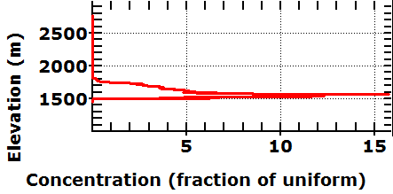
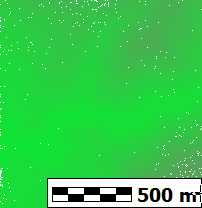
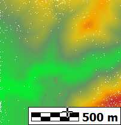

Get on the Stats tab of the Point Cloud display form.
Results
|
 |
Histgram on elevations within a lidar tile. Note that essentially all elevations are between 1500 and 1800. There are a few low returns, and a few high returms up to almost 1000 m above the terrain. | |
|
 |
Color coding by elevation, with the bulk of the color scale not used for the high noise. | |
|
 |
Color coding by elevation, with the range set 1500 to 1800. |
Last revision 2/4/2018